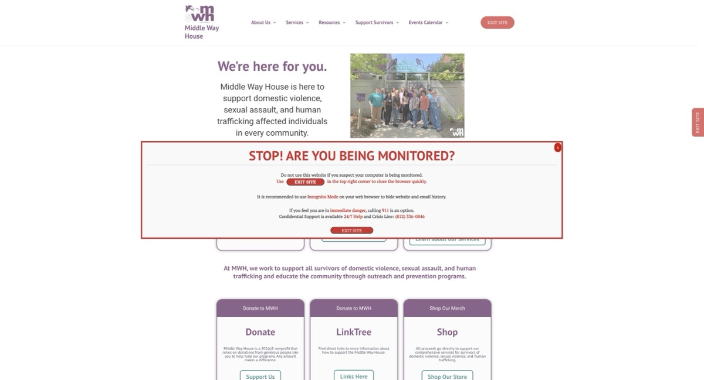
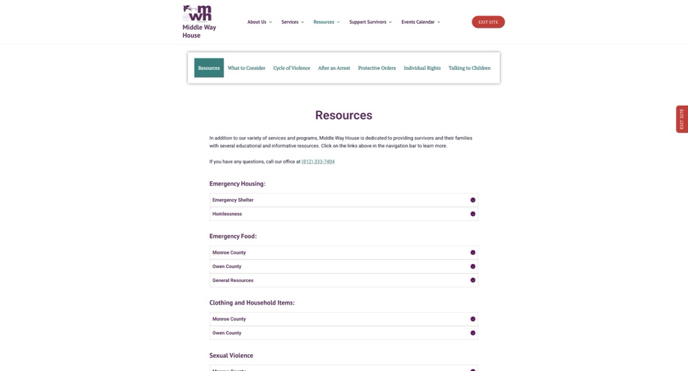

Middle Way House accessibility assessment
WCAG (Web Content Accessibility Guidelines) 2.1 Level AA review of middlewayhouse.org, covering keyboard access, focus visibility, colour contrast, navigation, headings and structure, safety/exit patterns, and resource discovery. Findings become prioritised remediation notes for authorised client representatives. This case study documents assessment and proposed fixes only. Live production edits stay with the client.
Scope note: the public site credits Serve IT Nonprofit Clinic in the footer. Portfolio pages here do not modify middlewayhouse.org. Screenshots are browser evidence from the live site.
Evidence from the live site


Concrete findings
- Focus visibility. A large share of sampled links and controls showed weak or missing visible focus (outline computed as none). Keyboard users need a clear focus ring across the primary nav, EXIT SITE controls, card CTAs, and accordion buttons.
-
Heading structure. The homepage exposes multiple
h1nodes (repeated “We’re here for you.” plus the safety modal title). Services and Resources use anh2page title while the modal often remains the onlyh1. Card section titles such as “Donate to MWH” and “Shop Our Merch” also appear duplicated in the outline. - Link text and content quality. Vague CTA copy such as “Links Here” fails descriptive-link expectations. Homepage CTA spelling includes “Additonal Resources”. On Resources, an accordion label reads “Homlessness” (missing “e”).
- Safety modal behaviour. The “STOP! ARE YOU BEING MONITORED?” dialog is important, but during review it was difficult to dismiss cleanly with Escape / Close while keeping a predictable focus return. Modal should trap focus while open, restore focus on close, and not leave duplicate headings in the page outline after dismiss.
- What is already working. A “Skip to content” link is present. Header, main, nav, and footer landmarks were detected. EXIT SITE affordances appear in multiple places, which is appropriate for this audience when implemented accessibly.
Prioritised remediation notes (proposed)
-
P1 · Focus styles. Add consistent
:focus-visibleoutlines on links, buttons, accordion headers, and EXIT SITE controls. Test full keyboard paths through nav dropdowns and the safety dialog. -
P1 · Modal accessibility. Implement a proper dialog pattern
(
role="dialog", labelled title, focus trap, Escape to close, return focus to the opener). Keep EXIT SITE as the fastest escape without trapping users who need to stay. -
P2 · Headings. One page-level
h1; demote hero copies and card titles; remove duplicate heading nodes created by repeated blocks or carousels. - P2 · Link names and typos. Replace “Links Here” with destination-specific text (for example “Open Middle Way House Linktree”). Fix “Additonal” and “Homlessness” in the CMS.
-
P3 · Accordion semantics. Ensure Resources expand/collapse buttons
expose
aria-expandedand associate controls with panels so keyboard and screen-reader users get the same state.
Related Serve IT work: Town of Nashville accessibility case study. Fuller scrapbook portfolio: portfolio.pdf.